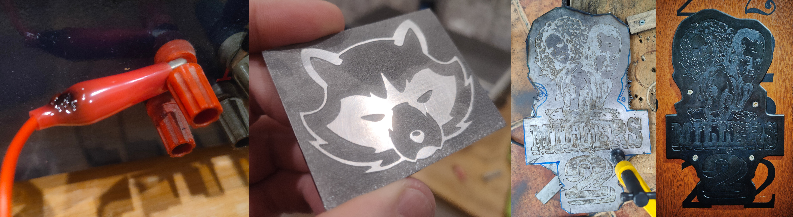
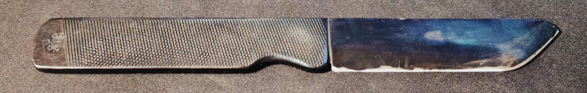

The etching process is quite useful for artistic projects as well as some technical ones (like PCB manufacturing). There are two most common ways to etch metals. The chemical (acid bath) and electroetching. The latter is preferable due to safety and ease of handling.
In this case I went with electroetching as it uses just water-salt solution (can be mixed with vinegar) and electricity. The mixture of salt water and vinegar worked well on aluminium copper and steel. The setup is as follows. Take the object you want to etch and mask the areas with foil. Submerge the piece in salt water with a scrap piece of preferably same metal. Connect the piece to positive electrode and scap metal to negative. The distance between piece and scrap metal should be small (but at least 2mm) and uniform. The closer the electrode is to the piece the more uniform the area between electrodes must be. Turn the power on and wait. The current determines the speed of the proces but also increases the surface roughness. It also must increase proportionally to the area and inversely to the electrodes distance to achieve the same effect. You must experiment to know what is best in your case as it is dependent on many factors.
The main struggle with this method is working with relatively high currents which in turn causes everything to heat up. Note the aligator clip in photo below (This happened way too many times).
In case of etching steel the foil came off either due to heat or some sort of chemical reaction. The only way I could keep the foil on was to reach for more drastic resources. The proces stayed the same but instead of submerging the piece in water bath I used 2 layers of water-salt-vinegar soaked paper towel ,sandwiched it between piece and scrap plate and blasted it with a welder. This provided A LOT of current and etched the piece in a matter of 15 seconds (after that the electrolyte pretty much boiled off). This allowed for the foil to stay in place. The effect of this process can be seen in a picture above on the right side. The left piece was aluminum with regular method.
The bluing of steel elements was carried out by using a cold oxidation solution. The workflow is as follows. Clean the steel part with soap water and let it dry completely (avoid leaving it in moisture). Soak a sponge or a paper towel in bluing solution (do not put the paper or sponge directly to the solution) and cover the piece. leave the piece for about 3 minutes. The wash the piece under clean water and quicly (but gently) dry it out. When the piece is dry apply generous layer of any type of oil. I used frying oil after making french fries. The downside of this approach is that my knife (seen above) smells a bit like fries all the time. The oil should be left on the piece for at leas few hours (best if a day passes). This creates quite durable coating.